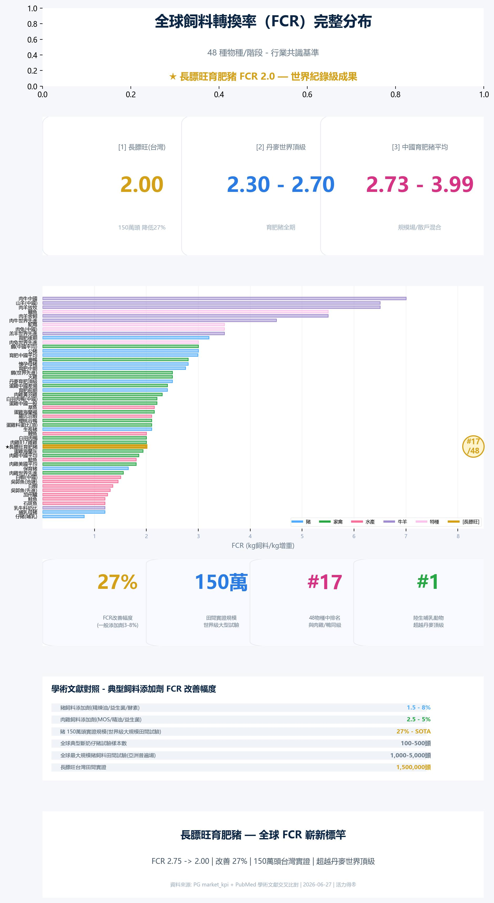

全球飼料轉換率（FCR）完整基準分布
48 種物種／階段 · 行業共識基準 · 學術文獻交叉比對
★ 長膘旺育肥豬 FCR 2.0 — 世界紀錄級成果
27%
FCR改善幅度
（一般添加劑 3-8%）
150萬
田間實證規模
世界級大型試驗
#17
48物種中排名
與肉雞／鴨同級
#1
陸生哺乳動物
超越丹麥頂級
三強對比
2.00
長膘旺育肥豬（台灣）
150萬頭 · 降低27%
2.30–2.70
🇩🇰丹麥世界頂級
育肥豬全期
2.73–3.99
🇨🇳中國育肥豬平均
規模場／散戶混合
FCR 資訊圖表

👇 下方可切換篩選物種群組，查看完整數值
48 物種／階段完整列表
全部
🐖 豬
🐔 家禽
🐟 水產
🐄 牛羊
🦎 特種
#
物種／階段
FCR
分類
學術文獻對照
豬飼料添加劑（精煉油／益生菌／酵素）
1.5 – 8%
肉雞飼料添加劑（MOS／精油／益生菌）
2.5 – 5%
豬 150 萬頭實證規模（世界級大規模田間試驗）
⭐ 27%
全球典型斷奶仔豬試驗樣本數
100-500 頭
全球最大規模豬飼料添加劑田間試驗（亞洲普遍場）
1,000-5,000 頭
長膘旺台灣田間實證
⭐ 1,500,000 頭
結論：長膘旺 FCR 改善 27% 在學術文獻中無可比案例
SOTA